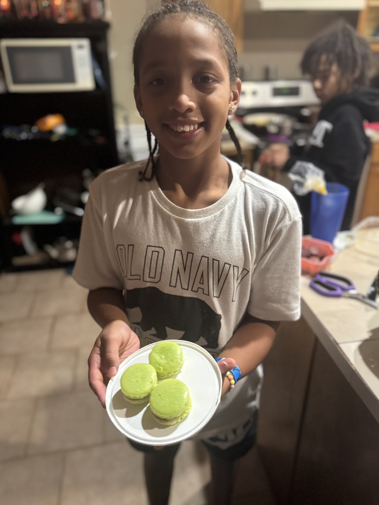

Da’Marius’ Adventures
Little to Big – Cooking & Learning
From tiny hands stirring bowls to confidently tackling new recipes, Da’Marius has always loved exploring the kitchen.
Cooking is more than just food; it’s about learning, experimenting, and celebrating small victories along the way.
Each dish is a little adventure that helps him grow and gain confidence in trying new things.
Photo Highlights


Arts, Crafts & 3D Printing – Creativity in Action
Da’Marius brings imagination to life through arts and crafts, and now 3D printing adds a whole new dimension to his creativity.
Whether he’s painting, building models, designing handmade projects, or bringing digital ideas into the physical world with 3D prints,
he loves experimenting with colors, textures, and forms. Each creation shows his curiosity, problem-solving skills, and determination
to see every idea through to completion, blending traditional creativity with modern technology.
Sports – Basketball, Football & Friendly Competitions
Sports have always been part of Da’Marius’ life, from shooting hoops to running the field in football.
While basketball and football are just part of his world, he approaches every game with energy, focus, and a drive to improve.
Da’Marius also enjoys fishing, showing patience, skill, and a love for being outdoors.
Beyond the court, field, and water, he has a knack for winning raffles and watermelon-eating contests,
showing that his competitive spirit and fun-loving attitude extend to everything he does.
Playing sports teaches him teamwork, perseverance, and the joy of celebrating effort as much as achievement.
Family – Helping Out and Lending a Hand
Mars is always ready to lend a hand and support the family. From taking care of his baby brother and cousins
to helping grandma at work, he shows responsibility, kindness, and a willingness to step up wherever he’s needed.
His helpful nature makes family life smoother and more fun, and it’s a big part of who he is.